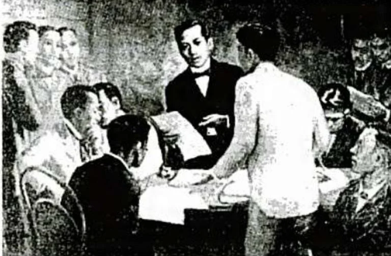
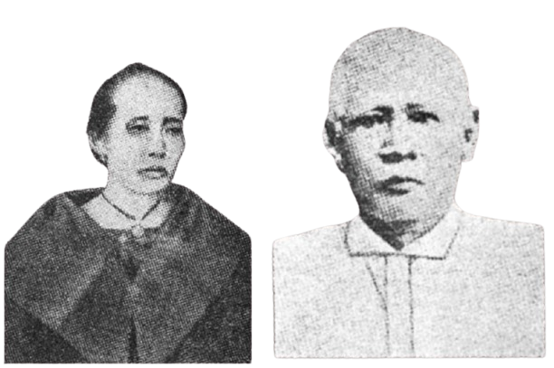
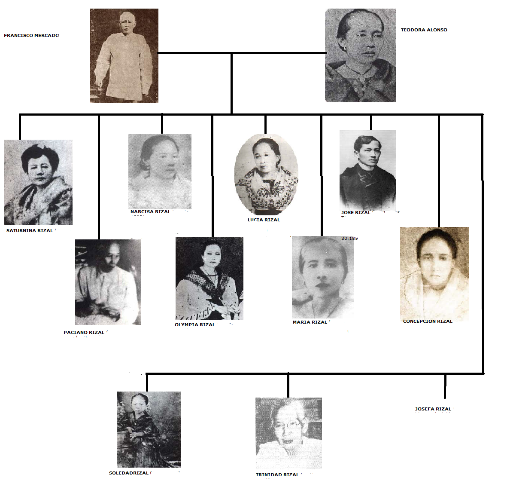

About Jose Rizal
José Rizal, the National Hero of the Philippines, was born on June 19, 1861, in Calamba, Laguna. He came from a well-respected family and was the seventh of eleven children of Francisco Mercado Rizal and Teodora Alonzo y Quintos. Baptized on June 22, 1861, at the Catholic Church of Calamba, he was destined for greatness from an early age.
Jose Protacio Rizal Mercado y Alonzo Realonda was a Filipino nationalist and revolutionary. He is widely considered one of the greatest heroes of the Philippines. Born on June 19, 1861, in Calamba, Laguna, he was a polymath who excelled in various fields, including medicine, literature, and the arts. Rizal’s most famous works, Noli Me Tangere and El Filibusterismo, exposed the injustices and oppression under Spanish colonial rule, inspiring Filipinos to fight for their rights. His writings and activism played a crucial role in the Philippine Revolution. Despite his peaceful advocacy, he was executed on December 30, 1896, in Bagumbayan (now Rizal Park), cementing his legacy as a martyr for Philippine independence.

Jose Rizal valued education as a powerful tool for national progress and enlightenment. He believed that knowledge and critical thinking could empower Filipinos to break free from colonial oppression. Rizal himself was a dedicated scholar, studying in prestigious institutions such as Ateneo Municipal de Manila and the University of Santo Tomas before earning his medical degree in Madrid. His writings, including The Indolence of the Filipino and The Philippines A Century Hence, emphasized the need for accessible, quality education. He criticized the Spanish colonial education system for promoting blind obedience instead of intellectual growth, advocating for reforms that would nurture independent thought and scientific inquiry among Filipinos.
Jose Rizal’s legacy continues to inspire generations of Filipinos in the pursuit of freedom, education, and national identity. His writings, particularly Noli Me Tangere and El Filibusterismo, exposed the injustices of Spanish rule and awakened Filipino nationalism. Beyond his literary works, Rizal’s advocacy for peaceful reform and intellectual empowerment laid the foundation for the Philippine revolution. His martyrdom on December 30, 1896, solidified his status as a national hero, symbolizing the courage to fight for justice and self-determination. Today, his ideals live on through the educational institutions, monuments, and laws dedicated to preserving his memory and teachings.
Family Background
José Rizal was born into a prominent and well-educated family in Calamba, Laguna, on June 19, 1861. His family belonged to the principalia, an elite class of Filipinos during the Spanish colonial period. They were known for their wealth, education, and influence.
Parents
- Francisco Mercado Rizal (1818–1898) – A well-respected landowner and businessman in Laguna. He was hardworking, disciplined, and ensured his children received a good education.
- Teodora Alonso Realonda (1827–1911) – A highly educated woman, known for her intelligence and strong character. She was Rizal's first teacher, teaching him to read and write at an early age.

Siblings
José Rizal was the seventh of eleven children:
- Saturnina Rizal (1850–1913) – The eldest sister, nicknamed "Neneng," helped support Rizal's education.
- Paciano Rizal (1851–1930) – The only brother, a revolutionary leader who played a crucial role in the Philippine Revolution.
- Narcisa Rizal (1852–1939) – Helped finance Rizal's studies and later located his secret burial site.
- Olimpia Rizal (1855–1887) – Nicknamed "Ypia," she was married to Silvestre Ubaldo.
- Lucia Rizal (1857–1919) – Married Mariano Herbosa, who died of cholera and was denied a Christian burial for being linked to Rizal.
- Maria Rizal (1859–1945) – She married Daniel Faustino Cruz of Biñan, Laguna.
- José Rizal (1861–1896) – The National Hero of the Philippines.
- Concepcion Rizal (1862–1865) – Died at the age of three, her death deeply saddened young José.
- Josefa Rizal (1865–1945) – Remained single and was a member of the Katipunan.
- Trinidad Rizal (1868–1951) – Never married and was entrusted with Rizal's last poem, Mi Último Adiós.
- Soledad Rizal (1870–1929) – The youngest sibling, a talented teacher and writer.
Family Influence
Rizal's family played a major role in shaping his education, values, and patriotism. His mother's teachings and brother Paciano's nationalist ideals greatly influenced his views on independence and reform. His family also supported his studies abroad, despite financial difficulties and political risks.

Education of José Rizal
José Rizal was a brilliant student who excelled in various fields, including literature, science, and languages. His education played a key role in shaping his nationalist ideals and intellectual pursuits.
Early Education (1865–1872)
- First Teacher – His mother, Teodora Alonso, taught him the alphabet, reading, and prayers at home.
- 1865 – Studied under Justiniano Aquino Cruz in Biñan, Laguna, where he learned Spanish and Latin.
- 1870 – His father sent him to Colegio de San Juan de Letran for entrance exams.
- 1872 – Enrolled at the Ateneo Municipal de Manila (now Ateneo de Manila University).
Higher Education (1872–1882)
- 1872–1877 – Studied at Ateneo Municipal de Manila, earning a Bachelor of Arts degree with highest honors.
- 1878–1882 – Enrolled in Medicine and Philosophy at the University of Santo Tomas (UST) but faced discrimination from Spanish professors.
- 1882 – Decided to continue his studies in Spain.
Studies Abroad (1882–1887)
- 1882–1885 – Attended Universidad Central de Madrid, earning a Licentiate in Medicine (1884) and a Licentiate in Philosophy and Letters (1885).
- 1885–1887 – Furthered his studies in Ophthalmology in Paris, France, and Heidelberg, Germany, under famous doctors.
- 1887 – Completed his medical specialization in ophthalmology, aiming to cure his mother's blindness.
Educational Achievements
- Mastered 22 languages, including Spanish, French, German, Latin, and English.
- Excelled in sculpting, painting, martial arts, and fencing.
- Wrote literary works, including Noli Me Tangere (1887) and El Filibusterismo (1891), which exposed Spanish abuses in the Philippines.